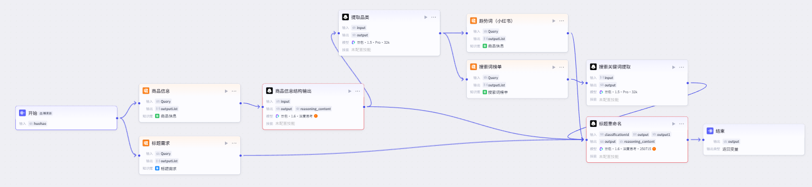

01 / AI 电商内容自动化
从商品信息到标题与种草文案的自动化生产
将商品信息、平台高搜索词与小红书趋势串联起来，用 Workflow 批量生成并优化电商内容。
← 返回作品目录业务问题
电商内容生产需要兼顾平台搜索趋势与商品卖点，人工逐条撰写标题和种草文案耗时，也难以保持表达一致性。
产品方案
以商品信息为输入，接入趋势与高搜索词数据，通过 Coze Workflow 调用大模型生成标题和文案，再用 Prompt 约束内容质量与穿搭细节。
Workflow 结构

标题优化
基于品类高搜索词
文案生成
参考爆款对标风格
批量处理
支持多图与多套搭配